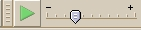

Navigating and identifying audio for editing
- For tips on how to view and adjust playback volume, and to achieve smooth playback quality, see Playback Tips.
- For tips on how to navigate effects without using a mouse see Navigating Effects without using a mouse
Changing playback position
Audacity always plays from where the cursor position is, or where a selected area is, when you press Space or use the Play button. Click the Stop button or Space again to stop playback. Clicking Play or Space a further time resumes playback from the original cursor position or the start of the original selection.
You can move the cursor position backwards or forwards anywhere on the visible screen by:
- moving the cursor with the Left arrow or Right arrow keys on your keyboard
- (quicker) by clicking in the track at the desired point with your mouse
- Home key or button to left of the Play button skips to the start of the project
- End key or button to right of the Stop button skips to the end of the project.
To start playback from the new point, press Space once. If you are already playing the track at another position, press S twice and playback will resume from your newly chosen cursor position.
Shortcuts to change the ongoing playback position
There are also two shortcut commands that have no menu item or button associated with them, they exist just as shortcuts. These enable you to change the current playback position to the next or previous label (if labels exist), while audio is playing:
- Alt + Right moves the cursor to the next labeled selection (or point label) and continues playback from there
- Alt + Left moves the cursor to the previous labeled selection (or point label) and continues playback from there.
Zooming
To move to different positions in the track with the mouse, it is easier if you are fully zoomed out with the command (Ctrl + F), or the button on the extreme right of Edit Toolbar.
If the track is zoomed in, you can drag the horizontal scroll bar near the bottom of the screen to find a new position to play from, but you cannot do this while the track is playing, unless you go to the Tracks section of Preferences and uncheck Update display when Recording/Playback head is unpinned. If that feature is unchecked, once the green playback cursor moves past the right edge of the window, you will always need to drag the horizontal scrollbar in order to see the current playback position, or fit the whole Project in the window so you can see the whole track again without scrolling.
Go to Selection Start/End
(shortcut Ctrl + [ ) and (shortcut Ctrl + ] ) let you move quickly to the start or end of your currently selected audio, centered on the screen, without changing the zoom level. These commands are useful if you are zoomed far in at one edge of the selection and then wish to view the other edge which may be currently off screen, or if you have lost sight of the selection entirely by scrolling too far.
Using either command after zooming in or out provides a keyboard method to zoom in or out on a selection edge. This is otherwise possible only by Control and mouse wheel scroll while the mouse pointer is positioned at either selection edge.
If you have multiple tracks on screen you can fit them on screen without the need to scroll up and down by dragging the bottom edge of each track upwards at any point along the waveform. Or you can use the command to fit all the tracks in the screen.
You can move tracks up and down by clicking on the Track Control Panel with the mouse and dragging up or down. Alternatively, click the downward pointing arrow at the top of the Track Dropdown Menu and choose "Move Track Up" or "Move Track Down".
Audacity can manipulate tracks and selected areas entirely with the keyboard. Use the Up or Down key on the keyboard to give focus to a track, as shown by the colored border around the track. Then press Enter to select or deselect the track.
There is an additional "roll-up" button (the upward pointing arrow) at the base of each Track Control Panel:
If you click this, the track will be rolled up so that only the name of the track is visible in the Track Control Panel, so allowing many tracks to be fitted on screen without scrolling:
To roll-down the track again, click the downward pointing arrow.
Also there is an option on the Tracks tab of Preferences: "Automatically fit tracks vertically zoomed". Checking this will automatically fit all tracks to the vertical screen height as they are added or removed.
Finding the audio you want to edit
- Seek function during playback: Seek by pre-determined amounts of time during playback by using the arrow keys of your keyboard. The default commands are:
- Seek left (short period) during playback - Left
- Seek right (short period) during playback - Right
- Seek left (long period) during playback - Shift + Left
- Seek right (long period) during playback - Shift + Right .
- The length of the seek period can be set on the Playback tab of Preferences. The shortcuts used for the seek commands can be changed on the Keyboard tab of Preferences.
- "Play/Stop and Set Cursor" shortcut X: This acts like Space except that when stopping playback, the cursor is set to the place where it stopped, so resumes from there.
- Quick-Play: Another way to change the playback position is to click on the Timeline above the waveform. Playback will start from that point at once. Or click on the Timeline and drag a region (shown by arrowheads with a line connecting them). Release the mouse to play the region once. Neither an already selected region or the cursor is affected by Quick-Play.
- Scrubbing: Scrubbing or Seeking is the action of moving the mouse pointer right or left so as to adjust the position, speed or direction of playback while listening - a convenient way to quickly navigate the waveform to find a particular event of interest.
- Selection Toolbar:

- You can move the cursor, or define a selection region, by entering time position values in a "Selection Toolbar" at the bottom of the screen. Values may be typed in, or incremented with the up and down arrow keys of the keyboard.
- "Cut Preview" shortcut: Press C to hear the audio just before and after a selection region so as to preview how it would sound if you cut that region out. You can change the length of the audio preview before and after the cut on the Playback tab of Audacity Preferences.
- "Play To Selection" shortcut: Press B to listen to part of the selection region, or to the audio before or after the selection. This helps you ensure the selection is exactly where you want it.
- Move the mouse pointer somewhere inside the left half of the selection, and this shortcut will play from the start of the selection to the pointer. Move the pointer somewhere inside the right half of the selection, and this shortcut will play from the pointer to the end of the selection.
- Move the pointer to left of the selection and this shortcut will play from the pointer to the start of the selection. Move the pointer after the end of the selection and this shortcut will play from the end of the selection to the pointer.
- If you like the selection region you heard, you can then use Ctrl + Shift with the appropriate Left or Right key to contract the selection to the area you played with the B shortcut.
If you need to expand the selection before using B, you can use Shift + Left or Shift + Right.
- Transcription Toolbar:
- This is a special playback button with attached speed slider
- 
Marking edit regions or points
Creating and modifying selections
To create a selected area in the track, click in the track and drag to left or right with your mouse, or with the left or right arrow keys. When you press Space once, the whole of the selected area will start to play. You can similarly create a selected area in the track whilst already playing the track, in which case you press Space twice to move from the current playback position to playing the selected area.
Another way to create a selected area in the track is to click in the track where you want to start your selection and hold Shift while clicking in the track at the point where you want to end your selection. Again, this also works while playing a track, so the selection region is drawn from the point where playback started to the point where you shift-clicked.
You can adjust the edges of the selection region with your mouse (hover over an edge then drag when the mouse pointer changes to a hand). Alternatively, adjust the selection edges with the left and right arrow keys. Holding down Shift while using Left or Right will expand the left or right selection edge respectively. Holding down Ctrl + Shift while using Left or Right will contract the right or left selection edge respectively.
You can also mark regions during playback with the [ (Select Left at Playback Position) and ] (Select Right at Playback Position) shortcuts. To use these, start playing then use [ to move the cursor to the current playback position. When you hear the end of the audio you want to mark as a region, use ] to draw a region from the cursor to the current playback position. You could then stop and place a label at the region with Ctrl + B (see below).
A selected region or the position of the editing cursor can be stored and retrieved. One region or cursor position at a time can be stored with the command and retrieved at any time with .
Additionally, stores a cursor position
which when audio is not playing, recording or paused, is the position of the editing cursor or of the left edge of the selection region. If audio is active, the stored cursor position is the position of the Playback cursor  or Recording cursor
or Recording cursor  at the time you store. The stored cursor position can then be used with the command to create or modify a selection region.
at the time you store. The stored cursor position can then be used with the command to create or modify a selection region.
Labels
Multiple selected regions and cursor points can also be marked with labels using the command (Ctrl + B). Labels can be helpful as reference points for editing. The region or point can be recalled at any time by clicking in the label. The labels appear in a new Label Track underneath the audio track.
You can also add a label at the current playback position while the track is playing, or at the current recording position while recording. To do this, click (Ctrl + M). It can also be useful to drag out and a label a region while the track is playing or recording. To label that region, use as you would if the track was stopped.
If you want to label while still playing, use Enter then Up after typing the label to close the label and return focus to the track. You can now use [ and ] as above to mark another region between desired points.
If you miss something you wanted to mark, you cannot currently use seek to jump the playback position behind the cursor, but as always you can click in the Timeline to restart playback at the click point. If you click in the Timeline to left of the editing cursor, the [ shortcut will draw a region from the playback cursor forwards to the editing cursor, which may not always be what you want. During playback you can click to place the editing cursor behind the playback cursor then draw a region from there to the current playback position using ] .
Tabbing to open the label for editing
When focus is on a label track as indicated by the yellow focus border:
- Tab opens the next label for editing and places the editing cursor or selection to correspond with that label
- Shift + Tab opens the previous label for editing and places the editing cursor or selection to correspond with that label.
The label background becomes white, indicating you can type to edit the label's text. For a point label, the editing cursor is placed at the label moved to. For a region label, a selection is placed corresponding to the label moved to. The view position moves if necessary to show you the label moved to.
Audacity cycles through the labels automatically, so when at the last label, moving to next label jumps to the first label. When at the first label, moving to previous label jumps to the last label.
These commands exist only as shortcuts - they have no menu items or buttons.
Shortcuts to move between labels without editing them
There are also two shortcut commands to move between labels without opening them for editing. These shortcuts do not require the yellow focus border to be in a label track:
- Alt + Right places the editing cursor or selection to correspond with the next label
- Alt + Left places the editing cursor or selection to correspond with the previous label.
The view position moves if necessary to show you the label moved to, centred in the view.
If there is a single label track, you do not need to be aware of which track has the yellow focus border.
If you have multiple label tracks, use Up or Down arrow to move the yellow focus border into the label track you wish to use. If there is more than one label track and none have focus, then the first label track downwards from the focused audio track is used.
As with the Tab and Shift + Tab commands, Audacity cycles through the labels automatically, and there are no corresponding menu items or buttons.
Clips
The command (shortcut Ctrl + I) splits the audio into different clips at the cursor or selection region, marking the split points with a black vertical line in the waveform. You can use these lines to quickly find or cut regions. A quick workflow to find and cut regions using split lines works like this:
- Zoom in as far as you like and play
- When you hear the starting point of the audio you want to delete, X to stop playback at that point, then Ctrl + I
- Press Play to resume from where you stopped, and when you reach the end of the intended cut, X then Ctrl + I again
- Double-click to left of the split line you just placed to select the region between the two split lines
- Adjust the edges of the region as needed using the mouse (or use Shift + Left or Shift + Right to expand the region or Ctrl + Shift + Left or Ctrl + Shift + Right to contract it).
Split lines disappear when you click on them to merge clips together, but you can use current Audacity's Cut Lines feature to place a vertical line at which audio was cut out. Click on the line at any time to restore the cut audio. Cut Lines can be enabled on the Tracks tab of Preferences.